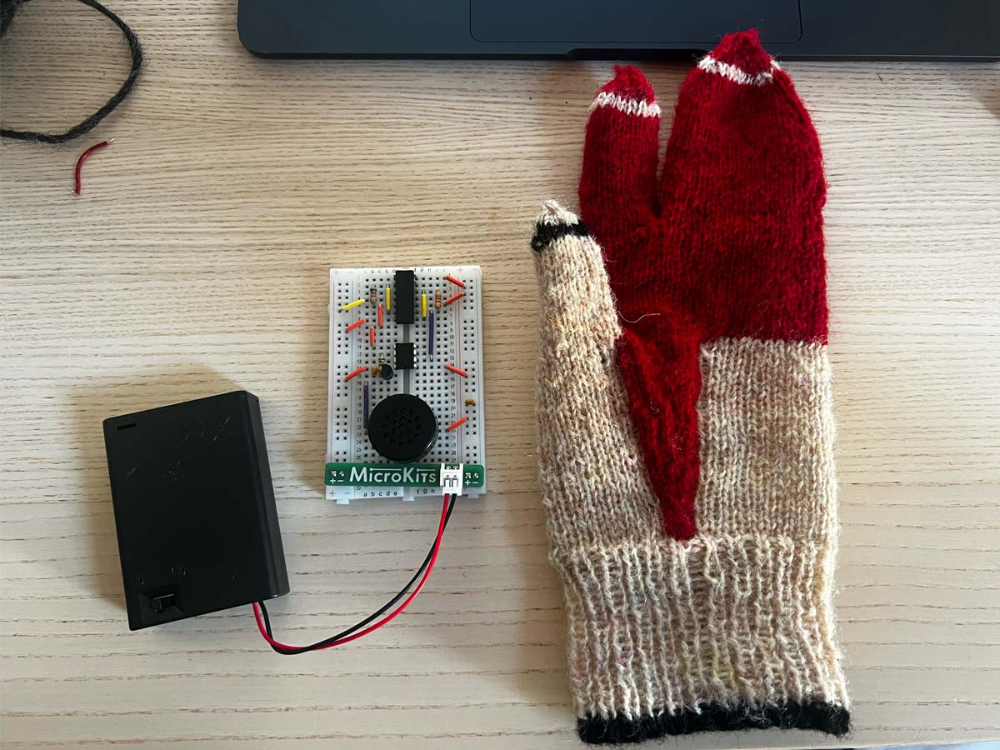
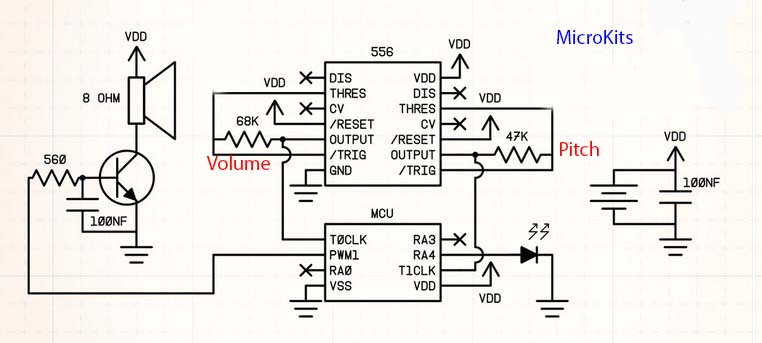

Theremi(tte)n!
[12.15.2025]
The working Theremi(tte)n.
The theremin is a touchless instrument that detects capacitance from objects in its eclectic field in order to control the sound and volume. The closer an object is to an antenna, the higher the capacitance since there is a greater buildup of the electric field, and vice versa for the further an object is. The theremin produces sound through electrons oscillating.

Alexandra Stepanoff playing the theremin on NBC Radio (1930).
My goal for this project was to knit a single-handed theremin that had volume and pitch control. For my first iteration of the Theremi(tte)n, the volume antenna was not working. Since the wool of the Theremi(tte)n was so close to the volume antenna, there was high capacitance which caused very low/absent volume. Consequently, I had to remove this antenna for the theremin to work. Similarly, the pitch antenna needed to be alone in the index finger sleeve since my finger’s proximity created high capacitance which resulted in a constant, high-pitch sound.

The theremin breadbord circuit (left) & the knitted theremin container (right).
In my second iteration, I went back to the schematic to study it and experiment. I discovered that the antennas were not vital to the theremin to make sound. However, the drawback to this was that I had to be very close to the circuit in order to control the volume and pitch, and it was not as sensitive to capacitance. But this was not an issue, in fact it was the solution since the wool of the Theremi(tte)n now had a negligible effect on the capacitance. This allowed me to incorporate the volume (index finger position) and pitch (other fingers positions) controls.

The theremin breadbord schematic without antennae.